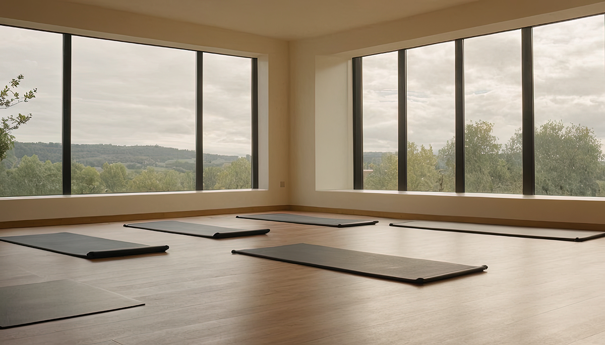
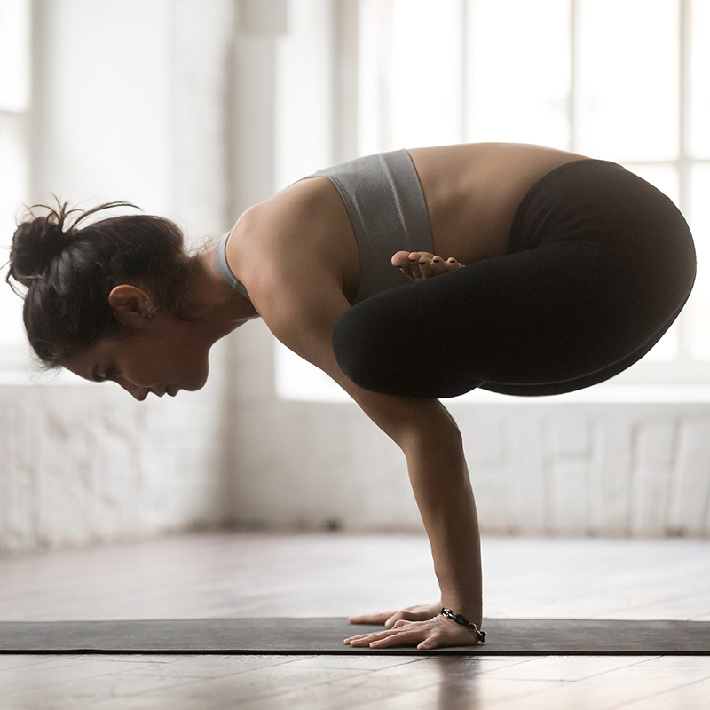

Our Mission
Riverbend Yoga Studio offers a welcoming space where beginners, busy professionals, and older adults can practice at a sustainable pace. We teach with patience, clear cues, and options so every student can feel supported from the first class.

New to Yoga? You Belong Here
You do not need flexibility, special clothing, or prior experience. Instructors offer chair and wall options, slower pacing, and extra time for questions. Come as you are; we will meet you there.
Featured Class: Gentle Morning Flow

This 45-minute class uses joint-friendly movement and guided breathing to start the day without strain. It is our most requested offering for first-time students and anyone returning after time away.
Weekly Schedule Overview
- Monday and Wednesday: Gentle Flow at 8:00 a.m. and Restorative Yoga at 6:30 p.m.
- Tuesday and Thursday: Beginner Vinyasa at 12:15 p.m. and Chair Yoga at 5:30 p.m.
- Saturday: Community Restorative at 9:00 a.m.
Private sessions are available by request. Visit the Class Offerings page for details or the Events page to reserve a workshop spot.